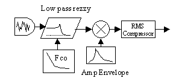
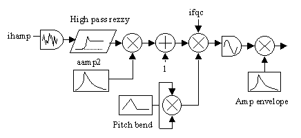

Synthesis
Features
Departments
Csound Drums
Hans Mikelson
Synthesizing drums
Csound is very good at synthesizing drum sounds. It is possible to create everything from realistic drum emulations through classic electronic percussion sounds to really wacked out drum kits from Venus. One reason Csound is so good at generating drum sounds may be due to its flexible structure. Percussion instruments often contain elements and structures which may be difficult to synthesize on conventional synthesizers. Drum machines of the past often used custom circuitry to generate their unique sounds. Samples can be used for realistic percussion sounds but they are static and are not as expressive as a synthesized sound can be. In this article I describe a few simple percussion sounds I have created over the past few weeks.
Formant pop
The simplest instrument in this group I call a fomant pop. It consists of a short pulse of noise followed by two band pass filters. The ouput from the filters is mixed before output.

The Csound code for this instrument follows:
adclck linseg 0, .002, 1, idur-.004, 1, .002, 0 ; Declick envelope
kamp linseg 0, .001, 1, .002, 0, idur-.003, 0
arnd rand kamp*6/iwdth ; Genrate impulse
asig butterbp arnd, ifqc, ifqc*iwdth ; Band pass filter
asig1 butterbp arnd, if1, if1*iwdth ; Band pass filter
aout = (asig+asig1*ia1)*iamp*adclck ; Apply amp envelope and declick
outs aout*ipanl, aout*ipanr ; Output the sound
This instrument produces a sound somewhat like a marimba or a wooden drum. The pitch controls the frequency of the first filter. The frequency of the second filter is taken as the root pitch multiplied by the formant frequency, FrmFqc. The amplitude of the second filter is controled by FrmAmp. Band width applies to both filters and is divided by 10 before use.
; Sta Dur Amp Pitch Pan FrmFqc FrmAmp BW i10 0.000 .15 25000 7.00 .5 4 .6 .18 i10 0.250 .15 18000 7.04 .9 3.5 .8 .18 i10 0.500 .15 25000 7.00 .7 4 .6 .16 i10 0.750 .15 25000 7.00 .3 4 .6 .17
Techno Bass Kick Drum
Much of techno dance music is built around an electronic bass kick drum with compression. This is my attempt at creating that sound. The sound begins with a random noise generator which feeds into a resonant low pass filter, rezzy. I originally tried using moogvcf and found that I liked the sound of rezzy better. Resonance is set fairly high. The cut off frequency is swept rapidly from a high value of 1kHz (modified by the accent parameter) through a couple of intermediate levels and ending on a final frequency which is typically between 40 and 80 Hz. The amplitude is scaled by an exponential envelope and finally rms compression is applied to the signal. The compression reduces the initial amplitude and adds more punch to the sound.

kfenv linseg 1000*iacc, .02, 180, .04, 120, idur-.06, ilowf ; Freq Envelope kaenv expseg .1, .001, 1, .02, 1, .04, .7, idur-.062, .7 ; Amp Envelope kdclck linseg 0, .002, 1, idur-.042, 1, .04, 0 ; Declick asig rand 2 ; Random number aflt rezzy asig, kfenv, irez*40 ; Filter aout1 = aflt*kaenv*3*iod/iacc ; Scale the sound krms rms aout1, 1000 ; Limiter, get rms klim table3 krms*.5, 5, 1 ; Get limiting value aout = aout1*klim*iamp*kdclck/sqrt(iod)*1.3 ; Scale again and ouput
A typical techno 4/4 score follows. The accent is used to modify the initial frequency. This can add more emphasis to the sound. The parameter Q is used to modify the resonance of the filter. Increasing overdrive will add more distortion to the kick drum. The LowFqc parameter determines the frequency the instrument ends on.
f5 0 1024 -8 1 256 1 256 .5 128 .3 128 .1 256 .1 r3 ; Sta Dur Amp Accent Q Overdrive LowFqc i11 0.0 .18 30000 1.2 1 2 60 i11 0.5 . . 1 < 2.5 . i11 1.0 . . . < 2 80 i11 1.5 .2 . . 1.5 3 40 f0 2 s i11 0.0 .18 30000 1 1 2 60 i11 0.5 . . . < 2.5 . i11 1.0 . . . < 2 . i11 1.5 . . . < 2 80 i11 1.75 .25 . . 1.5 3 60
FM Tom-Toms
The last instrument in this article is an FM tom-tom. The basic archetecture is to use filtered noise to modulate the frequency of a sine oscillator. I use rezzy in the high pass mode to filter the noise before scaling it and sending it to the sine oscillator. The filtered noise is applied to the initial hit and decays rapidly. The overall pitch is swept by an envelope to simulate the increase in pitch of a real drum as the membrane tightens from an impact. Finally an exponential envelope is applied to the overall amplitude.

afqc1 linseg 1+iamp/30000, ihit*.5*idur, 1, .1, 1 ; Pitch bend afqc = afqc1*afqc1 ; Pitch bend squared adclck linseg 0, .002, 1, idur-.004, 1, .002, 0 ; Declick envelope aamp1 expseg .01, .001, 1, idur-.001, .04 ; Tone envelope aamp2 expseg .01, .001, 1, idur*ihit-.001, .01 ; Noise envelope arnd1 rand ihamp ; Genrate noise arnd rezzy arnd1, ifco, irez, 1 ; High pass mode asig oscil 1, afqc*ifqc*(1+arnd*aamp2), 1 ; Frequency modulation with noise aout = asig*iamp*aamp1*adclck ; Apply amp envelope and declick
A typical score is presented below. The parameter Q controls the resonance of the high pass filter. This can be used to control how noise like the frequency modulation is. Fqc is the cut off frequency of the high pass filter. HitDur controls the decay time for the noise as well as the pitch bend envelope. HitAmp controls the overall amplitude of the filtered noise.
; Sta Dur Amp Pitch Q Fqc HitDur HitAmp Pan i12 0.125 .13 23000 6.09 30 1200 .18 70 .2 i12 0.250 .15 25000 6.09 20 300 .22 40 .5 i12 0.500 .15 25000 6.09 20 600 .22 70 .4 i12 0.750 .25 29000 7.02 30 900 .11 95 .8
More examples
Recently there have been several examples of drums and percussion instruments posted to the Csound mailing list. Varga István has submitted several excellent drums to the list well suited to techno and dance music. For an example try: http://media.dr.rhbnc.ac.uk/csound/list/msg03836.html
From the starting points I have provided it should be easy to create a wide variety of sounds. Creating percussion sounds is easy and fun with Csound. Just start experimenting and you should come up with many delightful instruments.